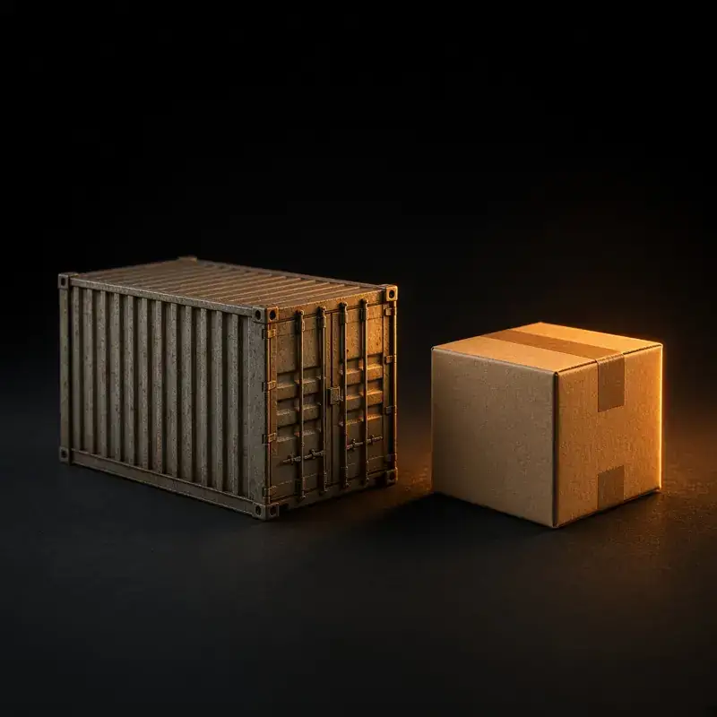

AI 生成示意AI-generated
AI 生成示意AI-generated經營者關係企業Affiliated with the site operator精選商家 Featured
江味齋 JiangWay
台灣家常味。主打炭烤雞排與水餃，純外帶，承接企業外燴。Taiwanese home cooking. Charcoal-grilled chicken cutlets and dumplings. Takeaway only; corporate catering available.
餐飲 Food & Drink · 地址：新地址待補（搬遷中），請見官網 Address: new address TBD (relocating), see website
官網 Website ↗電話待提供、地址搬遷中，請用官網聯絡 · Phone TBD, address relocating – contact via website
 AI 生成示意AI-generated
AI 生成示意AI-generated範例 / Sample
範例川菜館 Sample Sichuan Kitchen
麻辣川菜，內用外帶（虛構）。Spicy Sichuan dishes, dine-in and takeaway (fictional).
餐飲 Food · 虛構資料 Fictional
 AI 生成示意AI-generated
AI 生成示意AI-generated範例 / Sample
範例亞洲超市 Sample Asian Supermarket
華人食材與日用品（虛構）。Chinese groceries and household goods (fictional).
餐飲 Food · 虛構資料 Fictional
AI 生成示意AI-generated
範例 / Sample
範例會計事務所 Sample Accounting Office
個人與小企業報稅，中英服務（虛構）。Personal and small-business tax, Chinese & English (fictional).
生活服務 Services · 虛構資料 Fictional

AI 生成示意AI-generated範例 / Sample
範例移民顧問 Sample Immigration Consultant
簽證與居留文件協助（虛構）。Visa and residency paperwork help (fictional).
生活服務 Services · 虛構資料 Fictional
 AI 生成示意AI-generated
AI 生成示意AI-generated範例 / Sample
範例太陽能安裝 Sample Solar Installer
逆變器與電池安裝（虛構）。Inverter and battery installation (fictional).
生活服務 Services · 虛構資料 Fictional
 AI 生成示意AI-generated
AI 生成示意AI-generated範例 / Sample
範例中文補習班 Sample Chinese School
兒童中文課程（虛構）。Mandarin classes for children (fictional).
其他 Other · 虛構資料 Fictional